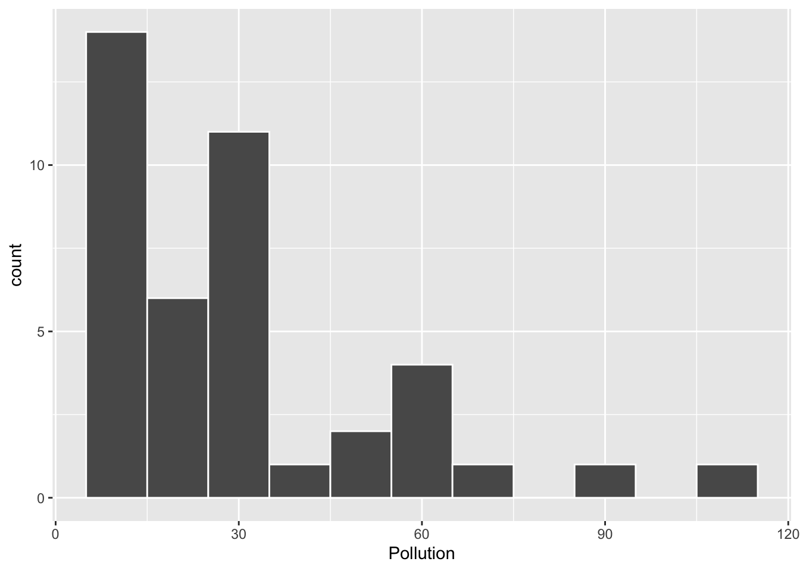
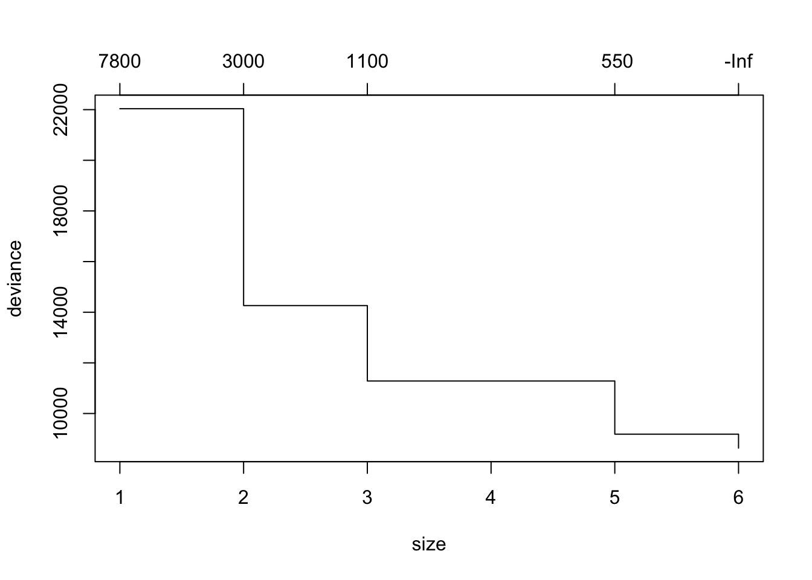

Tuesday, November 15, 2022
Today
- Geographic regression
Geographic regression
Geographic regression (geographically weighted regression or GWR) fits separate regression models for each location (e.g., polygon) using only values in neighboring locations defined by distance (bandwidth) or contiguity. This is useful for showing where the response variable is most strongly related to the explanatory variables. GWR is not a single model but a procedure for fitting a set of models.
The bandwidth is determined by a cross-validation procedure. GWR is used in epidemiology, particularly for research on infectious diseases and for evaluating health policies or health programs.
Example: Southern homicides {-}
url <- "http://myweb.fsu.edu/jelsner/temp/data/south.zip"
download.file(url,
destfile = here::here("data", "south.zip"))
unzip(zipfile = here::here("data", "south.zip"),
exdir = here::here("data"))The folder south contains shapefiles with homicide rates and explanatory variables for counties in the southern United States.
Import the data using the st_read() from the {sf} package. The data have latitude/longitude coordinates but there is no projection information so you set the CRS to long-lat with the st_crs() function.
SH.sf <- sf::st_read(dsn = here::here("data", "south"),
layer = "south")## Reading layer `south' from data source
## `/Users/jameselsner/Desktop/ClassNotes/QG-2022/data/south'
## using driver `ESRI Shapefile'
## Simple feature collection with 1412 features and 69 fields
## Geometry type: MULTIPOLYGON
## Dimension: XY
## Bounding box: xmin: -106.6495 ymin: 24.95597 xmax: -75.046 ymax: 40.63714
## CRS: NAsf::st_crs(SH.sf) <- 4326
names(SH.sf)## [1] "NAME" "STATE_NAME" "STATE_FIPS" "CNTY_FIPS" "FIPS"
## [6] "STFIPS" "COFIPS" "FIPSNO" "SOUTH" "HR60"
## [11] "HR70" "HR80" "HR90" "HC60" "HC70"
## [16] "HC80" "HC90" "PO60" "PO70" "PO80"
## [21] "PO90" "RD60" "RD70" "RD80" "RD90"
## [26] "PS60" "PS70" "PS80" "PS90" "UE60"
## [31] "UE70" "UE80" "UE90" "DV60" "DV70"
## [36] "DV80" "DV90" "MA60" "MA70" "MA80"
## [41] "MA90" "POL60" "POL70" "POL80" "POL90"
## [46] "DNL60" "DNL70" "DNL80" "DNL90" "MFIL59"
## [51] "MFIL69" "MFIL79" "MFIL89" "FP59" "FP69"
## [56] "FP79" "FP89" "BLK60" "BLK70" "BLK80"
## [61] "BLK90" "GI59" "GI69" "GI79" "GI89"
## [66] "FH60" "FH70" "FH80" "FH90" "geometry"Each row is a separate county in the southeast U.S. There are 1412 counties.
You want a model to predict homicide rates (HR). The values are given as the number of homicides per 100,000 people. You consider five explanatory variables for your model including RD: resource deprivation index, PS: population structure index, MA: marriage age, DV: divorce rate, and UE: unemployment rate. The two digit number in the column names is the census year from the 20th century.
First use the plot() method on the geometry column to see the extent of the data and the spatial geometries.
plot(SH.sf$geometry, col = "gray70")
Next you reduce the number of variables in the data frame keeping only the variables of interest using the select() function from the {dplyr} package.
SH.sf <- SH.sf |>
dplyr::select(HR90, RD90, PS90, MA90, DV90, UE90)You then create a thematic map of the homicide rates from the 1990 census (HR90) using the functions from the {tmap} package.
library(tmap)
tm_shape(SH.sf) +
tm_fill("HR90", title = "1990\nHomicide Rates\n[/100,000]") +
tm_layout(legend.outside = TRUE)
You start with a regression model regressing homicide rate onto resource deprivation, population structure, marriage age, divorce rate, and unemployment rate in 1990.
model.lm <- lm(HR90 ~ RD90 + PS90 + MA90 + DV90 + UE90,
data = SH.sf)
summary(model.lm)##
## Call:
## lm(formula = HR90 ~ RD90 + PS90 + MA90 + DV90 + UE90, data = SH.sf)
##
## Residuals:
## Min 1Q Median 3Q Max
## -19.583 -3.514 -0.747 2.591 41.833
##
## Coefficients:
## Estimate Std. Error t value Pr(>|t|)
## (Intercept) 8.96250 1.78133 5.031 5.50e-07 ***
## RD90 4.58778 0.21457 21.381 < 2e-16 ***
## PS90 1.95589 0.20540 9.522 < 2e-16 ***
## MA90 -0.04948 0.04890 -1.012 0.312
## DV90 0.46159 0.11517 4.008 6.45e-05 ***
## UE90 -0.52440 0.07003 -7.489 1.22e-13 ***
## ---
## Signif. codes: 0 '***' 0.001 '**' 0.01 '*' 0.05 '.' 0.1 ' ' 1
##
## Residual standard error: 5.861 on 1406 degrees of freedom
## Multiple R-squared: 0.3092, Adjusted R-squared: 0.3067
## F-statistic: 125.8 on 5 and 1406 DF, p-value: < 2.2e-16You see that RD90, PS90, and DV90 all have a direct relationship to HR90 (positive coefficient) while both MA90 and UE90 have an indirect relationship to HR90 (negative coefficient).
Based on the \(p\) values listed in the table of coefficients you suggest that the model might be simplified by removing marriage age (MA90). You check this suggestion with the drop1() function.
drop1(model.lm)## Single term deletions
##
## Model:
## HR90 ~ RD90 + PS90 + MA90 + DV90 + UE90
## Df Sum of Sq RSS AIC
## <none> 48296 4999.7
## RD90 1 15703.4 63999 5395.2
## PS90 1 3114.7 51410 5085.9
## MA90 1 35.2 48331 4998.7
## DV90 1 551.8 48848 5013.7
## UE90 1 1926.3 50222 5052.9You see that when marriage age (MA90) is removed from the model the RSS (residual sum of squares) value increases by 35.2 units. This increase is not enough to justify the loss in the degrees of freedom. Thus the AIC value is lower (4998.7) than the AIC when all terms are retained (4999.7) (see the row labeled <none>).
The AIC is a way to balance the trade-off between bias and variance. Choose a model that has the lowest AIC. A model may have too much bias (toward the particular data set) if it has too many coefficients and a model may have too much residual variance if there are too few coefficients.
You then remove the marriage age variable and refit the model.
model.lm2 <- lm(HR90 ~ RD90 + PS90 + DV90 + UE90,
data = SH.sf)Based on the AIC you find that the new model (model.lm2) should not be simplified further.
drop1(model.lm2)## Single term deletions
##
## Model:
## HR90 ~ RD90 + PS90 + DV90 + UE90
## Df Sum of Sq RSS AIC
## <none> 48331 4998.7
## RD90 1 16830.1 65161 5418.6
## PS90 1 3750.2 52081 5102.2
## DV90 1 516.7 48848 5011.7
## UE90 1 1902.9 50234 5051.2All the AIC values exceed those in the first row so you are content with this model.
Next you map the predicted values. You first add the predicted values to the simple features data frame as a column with name predLM2. The predicted values from the model object are extracted with the predict() method.
SH.sf$predLM2 <- predict(model.lm2)
head(cbind(SH.sf$HR90, SH.sf$predLM2))## [,1] [,2]
## [1,] 0.9460827 6.965969
## [2,] 1.2349338 4.719254
## [3,] 2.6210087 9.876765
## [4,] 4.4615769 6.786793
## [5,] 6.7127356 8.695625
## [6,] 1.6475415 7.549207The first column is the actual homicide rates in the first six counties and the second column printed is the predicted homicide rate from the linear regression model. The predictions do not appear to be very good.
A scatter plot of the observed versus the predicted shows this clearly.
library(ggplot2)
ggplot(data = SH.sf,
mapping = aes(x = HR90, y = predLM2)) +
geom_point() +
geom_abline(slope = 1) +
geom_smooth(method = lm, se = FALSE) +
theme_minimal()## `geom_smooth()` using formula 'y ~ x'
Since the homicide rates are non-negative, you create a new column in the SH.sf data frame called logHR90, which is the logarithm of HR90.
Since there are some counties with no homicides [log(0) = -Inf] you change values in those counties to the minimum observed value before taking logarithms.
Here you first create a logical vector x corresponding to the rows with non-zero homicide rates. You then find the minimum non-zero rate and assign it to e. Next you subset on this value for all rates equal to zero and finally you create a new column as the logarithm of the non-zero rates.
x <- SH.sf$HR90 != 0
e <- min(SH.sf$HR90[x])
SH.sf$HR90[!x] <- e
SH.sf$logHR90 <- log(SH.sf$HR90)You then fit a model with logHR90 as our response variable.
model.lm3 <- lm(logHR90 ~ RD90 + PS90 + DV90 + UE90,
data = SH.sf)
summary(model.lm3)##
## Call:
## lm(formula = logHR90 ~ RD90 + PS90 + DV90 + UE90, data = SH.sf)
##
## Residuals:
## Min 1Q Median 3Q Max
## -2.54480 -0.34707 0.09298 0.46404 3.11601
##
## Coefficients:
## Estimate Std. Error t value Pr(>|t|)
## (Intercept) 1.490522 0.118854 12.541 < 2e-16 ***
## RD90 0.506974 0.027083 18.720 < 2e-16 ***
## PS90 0.378972 0.025063 15.121 < 2e-16 ***
## DV90 0.068451 0.014464 4.733 2.44e-06 ***
## UE90 -0.048356 0.009042 -5.348 1.04e-07 ***
## ---
## Signif. codes: 0 '***' 0.001 '**' 0.01 '*' 0.05 '.' 0.1 ' ' 1
##
## Residual standard error: 0.758 on 1407 degrees of freedom
## Multiple R-squared: 0.2929, Adjusted R-squared: 0.2909
## F-statistic: 145.7 on 4 and 1407 DF, p-value: < 2.2e-16You again compute the predicted values and include them in the data frame as predLM3. The predictions are on the logarithm scale so you use the exponential function exp() to transform the output to rates. You then create a scatter plot of the observed versus predicted as before.
SH.sf$predLM3 <- exp(predict(model.lm3))
ggplot(data = SH.sf,
mapping = aes(x = HR90, y = predLM3)) +
geom_point() +
geom_abline(slope = 1) +
geom_smooth(method = lm, se = FALSE) +
theme_minimal()## `geom_smooth()` using formula 'y ~ x'
The range of predicted values is better.
It is likely that homicide rates are similar in neighboring counties. It also might be the case that the similarity is statistically explained by the variables in the model.
So your next step it to test for significant autocorrelation in the model residuals. You create a weights matrix using the functions from the {spdep} package and then use the lm.morantest() function.
nbs <- spdep::poly2nb(SH.sf)
wts <- spdep::nb2listw(nbs)
spdep::lm.morantest(model.lm3,
listw = wts)##
## Global Moran I for regression residuals
##
## data:
## model: lm(formula = logHR90 ~ RD90 + PS90 + DV90 + UE90, data = SH.sf)
## weights: wts
##
## Moran I statistic standard deviate = 7.1847, p-value = 3.367e-13
## alternative hypothesis: greater
## sample estimates:
## Observed Moran I Expectation Variance
## 0.1139749888 -0.0021045133 0.0002610288Moran I is only .11 but it is statistically significant (\(p\) value < .01) because of the large number of counties.
Next you map the residuals. First add the residuals as a column named res3 in the simple feature data frame.
SH.sf$res3 <- residuals(model.lm3)
library(tmap)
tm_shape(SH.sf) +
tm_fill("res3", title = "Model\nResiduals")## Variable(s) "res3" contains positive and negative values, so midpoint is set to 0. Set midpoint = NA to show the full spectrum of the color palette.
There are small clusters of counties with positive residuals and other small clusters of negative residuals. Interestingly the pattern of these clusters appears to be different over western and northern areas compared to over the deep south.
This suggests that the relationships between homicide rates and the socioeconomic factors might vary across the domain. GWR is a procedure to fit local regression models.
Linear regression is a model for the conditional mean. The mean of the response variable depends on the explanatory variable(s). Geographic regression might show how this dependency varies by location. It is an exploratory technique intended to indicate where local regression coefficients are different from the global values.
A model is fit at each location. All observations contribute to the fit but they are weighted inversely by their distance to the location. At the shortest distances observations are given the largest weights based on a Gaussian function. The process results in a set of regression coefficients for each observation.
You do this with functions from the {spgwr} package. The geometry information in simple feature data frames is NOT accessible by functions in this package so we need to create another type of spatial data frame.
SH.sp <- as(SH.sf, "Spatial")The spatial information in the SH.sp is separated from the data frame but accessible by the functions gwr.sel() and gwr(). The variables remain the same.
You obtain the optimal bandwidth with the gwr.sel() function from the {spgwr} package. You include the model formula, the data, and since the CRS is geographic you use the argument longlat = TRUE to get the distances in kilometers.
library(spgwr)## Loading required package: sp## Loading required package: spData## To access larger datasets in this package, install the spDataLarge
## package with: `install.packages('spDataLarge',
## repos='https://nowosad.github.io/drat/', type='source')`## NOTE: This package does not constitute approval of GWR
## as a method of spatial analysis; see example(gwr)bw <- gwr.sel(formula = logHR90 ~ RD90 + PS90 + DV90 + UE90,
data = SH.sp,
longlat = TRUE)## Bandwidth: 1264.192 CV score: 803.4638
## Bandwidth: 2043.463 CV score: 809.8007
## Bandwidth: 782.5756 CV score: 792.1951
## Bandwidth: 484.9205 CV score: 776.8019
## Bandwidth: 300.9595 CV score: 759.9205
## Bandwidth: 187.2653 CV score: 748.7083
## Bandwidth: 116.9985 CV score: 757.0343
## Bandwidth: 202.3323 CV score: 749.7891
## Bandwidth: 178.7092 CV score: 748.2676
## Bandwidth: 155.1378 CV score: 748.2124
## Bandwidth: 166.1585 CV score: 747.9707
## Bandwidth: 166.318 CV score: 747.9712
## Bandwidth: 165.6051 CV score: 747.97
## Bandwidth: 161.6069 CV score: 748.0019
## Bandwidth: 165.5209 CV score: 747.9699
## Bandwidth: 165.5242 CV score: 747.9699
## Bandwidth: 165.5245 CV score: 747.9699
## Bandwidth: 165.5244 CV score: 747.9699
## Bandwidth: 165.5245 CV score: 747.9699
## Bandwidth: 165.5245 CV score: 747.9699bw## [1] 165.5245The automatic selection procedure makes an initial guess at the bandwidth distance then fits local regression models in each county using neighbors defined by that distance. A cross-validated (CV) skill score is the root mean square prediction error. The cross-validation procedures successively removes one county from the modeling and that county’s homicide rate is predicted. Each county takes turn getting removed.
The selection procedure continues by changing the initial guess at the bandwidth and computing the CV score. If the CV score is higher than with the initial guess the bandwidth is changed in the other direction. If it is lower than the bandwidth is changed in the same direction. The entire procedure continues until no additional improvement is made to the CV score. This results in an optimal bandwidth distance. In this case it is 165.5 km.
The bandwidth is assigned to the object bw as a single value.
To get a feel for what a bandwidth distance of 165 km means in terms of the average number of neighbors per county you note that one-half the distance squared times \(\pi\) is the area captured by the bandwidth.
( bwA <- pi * (bw * 1000 /2)^2 ) ## [1] 21518612143Or 21,519 square kilometers.
County areas are computed using the st_area() function. The average size of the counties and the ratio of the bandwidth area to the average county area is also computed.
areas <- sf::st_area(SH.sf)
ctyA <- mean(areas)
bwA/ctyA## 13.2473 [1/m^2]The ratio indicates that, on average, a neighborhood consists of 13 counties. For comparison, on a raster there are 8 first-order neighboring cells (queen contiguity) and 16 second-order neighboring cells (neighbors of neighbors) or a total of 24 neighbors.
You then use the gwr() function from the {spgwr} package that includes the formula, data, and the bandwith = argument.
model.gwr <- gwr(formula = logHR90 ~ RD90 + PS90 + DV90 + UE90,
data = SH.sp,
bandwidth = bw)## Warning in proj4string(data): CRS object has comment, which is lost in output; in tests, see
## https://cran.r-project.org/web/packages/sp/vignettes/CRS_warnings.htmlThe warning message can be safely ignored.
The model and observed data are assigned to list object with element names extracted with the names() function.
names(model.gwr)## [1] "SDF" "lhat" "lm" "results" "bandwidth" "adapt"
## [7] "hatmatrix" "gweight" "gTSS" "this.call" "fp.given" "timings"The first element of the list named SDF contains the model output as a S4 spatial class data frame. The geometry of the spatial data frame is inherited from the type of data frame specified in the data = argument.
The structure of the S4 spatial class is obtained with the str() function and by setting the max.level argument to 2.
str(model.gwr$SDF, max.level = 2)## Formal class 'SpatialPolygonsDataFrame' [package "sp"] with 5 slots
## ..@ data :'data.frame': 1412 obs. of 9 variables:
## ..@ polygons :List of 1412
## ..@ plotOrder : int [1:1412] 1247 1172 1091 1088 1253 1368 1286 1201 1089 292 ...
## ..@ bbox : num [1:2, 1:2] -106.6 25 -75 40.6
## .. ..- attr(*, "dimnames")=List of 2
## ..@ proj4string:Formal class 'CRS' [package "sp"] with 1 slot
## ..$ comment: chr "TRUE"Here there are 5 slots with the first slot being the attribute table labeled @data. The dimension of the attribute table is retrieved with the dim() function.
dim(model.gwr$SDF)## [1] 1412 9There are 1412 rows and 9 columns. Each row corresponds to a county and information about the regression localized to the county is given in the columns. The attribute names are extracted with the names() function.
names(model.gwr$SDF)## [1] "sum.w" "X.Intercept." "RD90" "PS90" "DV90"
## [6] "UE90" "gwr.e" "pred" "localR2"They include the sum of the weights sum.w (the larger the sum the more often the county was included in the local regressions–favoring smaller counties and ones farther from the borders of the spatial domain), the five regression coefficients (one for each of the 4 explanatory variables and an intercept term), the residual (gwr.e), the predicted value (pred) and the local goodness-of-fit (localR2).
You put the predictions into the SH.sf simple feature data frame with the column name predGWR.
SH.sf$predGWR <- exp(model.gwr$SDF$pred)
tm_shape(SH.sf) +
tm_fill("predGWR", title = "Predicted\nHomicide Rates\n[/100,000]") 
The geographic regressions similarly capture the spatial pattern of homicides across the south. The spread of predicted values matches the observed spread better than the regression model. The pattern is also a smoother.
With many more model parameters metrics of predictive skill will favor the geographic regression. For example, the root mean-square-error is lower for GWR.
sqrt(sum(residuals(model.lm3)^2))## [1] 28.43259sqrt(sum(model.gwr$SDF$gwr.e^2))## [1] 25.68342Geographic regression is useful for generating hypotheses. From the linear regression model we saw that homicide rates increased with resource deprivation. How does this relationship between homicide rates and resource deprivation vary across the South?
coef(model.lm3)[2]## RD90
## 0.5069745range(model.gwr$SDF$RD90)## [1] 0.08433603 0.98150259The global regression coefficient is .51 but locally the coefficients range from 0.08 to .98.
Importantly you can map where resource deprivation has the most (and least) influence on homicide rates.
SH.sf$RDcoef <- model.gwr$SDF$RD90
tm_shape(SH.sf) +
tm_fill("RDcoef", title = "Resource\nDeprivation\nCoefficient", palette = 'Blues')
All values are above zero indicating the importance of resource deprivation as a predictor of homicides, but areas in darker blue indicate where resource deprivation plays a bigger role in explaining homicides. Places like western Texas and southern Florida.
What about the influence of unemployment on homicide rates?
SH.sf$UEcoef <- model.gwr$SDF$UE90
tm_shape(SH.sf) +
tm_fill("UEcoef", title = "Unemployment\nCoefficient", palette = 'PiYG')## Variable(s) "UEcoef" contains positive and negative values, so midpoint is set to 0. Set midpoint = NA to show the full spectrum of the color palette.
While the global coefficient is negative indicating homicide rates tend to be lower in areas with more unemployment, the opposite is the case over much of Texas into Oklahoma.
Finally, where does the model provide the best fit to the data? This is answered with a map of local R squared values (localR2).
SH.sf$localR2 <- model.gwr$SDF$localR2
tm_shape(SH.sf) +
tm_fill("localR2", title = "Local\nR Squared", palette = 'Purples') 
You see that the models are best at statistical explaining homicides in places like western Texas and southern Florida.
Key point: When you fit a regression model to data that vary spatially you are assuming an underlying stationary process. This means you believe the explanatory variables ‘provoke’ the same statistical response across the entire domain.
If this is not the case then it shows up in a map of correlated residuals. One approach to investigate this assumption is to use geographic regression. Another approach is to use a single spatial regression model.